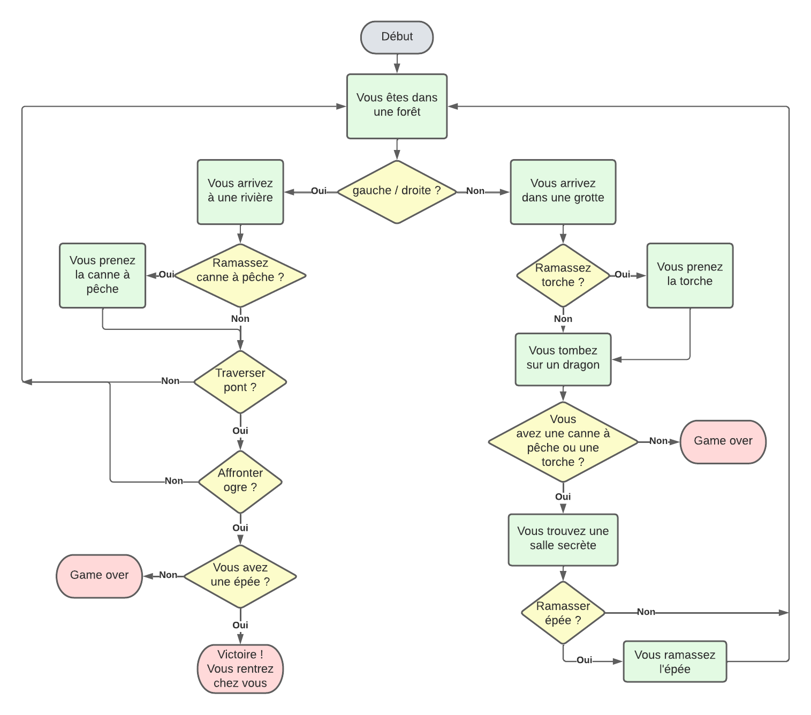

Histoire interactive¶
Dans cette activité, vous allez programmer une histoire interactive. C’est-à-dire une histoire durant laquelle le lecteur peut faire des choix.
Pour cela, vous allez principalement utiliser les éléments suivants:
print()pour afficher le texte de l’histoireinput()pour poser des questions au lecteurif,elifetelsepour créer les embranchements de l’histoirewhilepour éventuellement répéter des choseséventuellement une
listepour stocker un inventairedefpour définir des fonctions qui codent des parties de l’histoire
Commençons par les bases.
Comment poser des questions au joueur ?¶
Pour poser des questions au joueur, on utilise la fonction input(). Par exemple:
choix = input("Voulez-vous aller à gauche ou à droite ? (gauche, droite) ")
if choix == "gauche":
print("Vous allez à gauche et vous trouvez un trésor !")
elif choix == "droite":
print("Vous allez à droite et vous tombez dans un piège !")
else:
print("Vous n'avez pas fait un choix valide.")
Comment faire varier une variable durant l’histoire¶
Vous pouvez créer des variables pour stocker des informations sur le joueur, comme son argent ou sa vie. Par exemple:
argent = 100 # On déclare une variable argent qui vaut 100 au début de l'aventure
print("Vous avez", argent, "pièces d'or.")
choix = input("Voulez-vous acheter une épée pour 50 pièces d'or ? (oui, non) ")
if choix == "oui":
if argent >= 50: # On vérifie que le joueur a assez d'argent pour acheter l'épée
argent = argent - 50 # On soustrait 50 à la variable argent pour payer l'épée
print("Vous avez acheté une épée ! Il vous reste", argent, "pièces d'or.")
else:
print("Vous n'avez pas assez d'argent pour acheter l'épée.")
elif choix == "non":
print("Vous décidez de ne pas acheter l'épée.")
N’oubliez pas que vous pouvez aussi déclarer des variables logiques ! Par exemple:
perdu = False # On déclare une variable perdu qui vaut False au début de l'aventure
choix = input("Voulez-vous entrer dans la grotte ? (oui, non) ")
if choix == "oui":
print("Vous entrez dans la grotte et vous êtes attaqué par un monstre !")
perdu = True # On met la variable perdu à True pour indiquer que le joueur a perdu
elif choix == "non":
print("Vous décidez de ne pas entrer dans la grotte et vous continuez votre chemin.")
if perdu:
print("Game over !")
else:
print("Vous continuez votre aventure !")
Modifier une variable dans une fonction
Si vous voulez modifier une variable qui a été déclarée en dehors d’une fonction, il faut utiliser l’instruction global pour indiquer que vous voulez modifier la variable dans la fonction. Par exemple:
argent = 100
def acheter_epee():
global argent # On indique que nous voulons modifier la variable argent
if argent >= 50:
argent = argent - 50
print("Vous avez acheté une épée ! Il vous reste", argent, "pièces d'or.")
else:
print("Vous n'avez pas assez d'argent pour acheter l'épée.")
acheter_epee() # On appelle la fonction acheter_epee
Comment stocker des objets dans un inventaire ?¶
Vous pouvez utiliser une liste pour stocker les objets que le joueur trouve durant son aventure. Par exemple:
inventaire = [] # On déclare une liste vide pour l'inventaire du joueur
print("Vous trouvez une épée !")
inventaire.append("épée") # On ajoute l'épée à l'inventaire du joueur
print("Votre inventaire:", inventaire)
if "épée" in inventaire:
print("Vous avez une épée dans votre inventaire, vous pouvez l'utiliser pour combattre les monstres !")
else:
print("Vous n'avez pas d'épée dans votre inventaire, vous êtes vulnérable face aux monstres !")
Notez que vous pouvez aussi enlever des objets de l’inventaire avec la méthode remove(). Par exemple:
inventaire = ["épée", "bouclier", "potion"]
print("Votre inventaire:", inventaire)
print("Vous utilisez votre potion de soin.")
inventaire.remove("potion") # On enlève la potion de l'inventaire du joueur
print("Votre inventaire:", inventaire)
Comment faire des boucles ou créer des raccourcis dans l’histoire ?¶
Le plus simple est d’utiliser des fonctions pour créer des parties de l’histoire qui peuvent être réutilisées. Par exemple:
def entrer_grotte():
print("Vous entrez dans la grotte et vous êtes attaqué par un monstre !")
print("Game over !")
def continuer_aventure():
print("Vous continuez votre aventure !")
choix = input("Voulez-vous entrer dans la grotte ? (oui, non) ")
if choix == "oui":
entrer_grotte() # On appelle la fonction entrer_grotte pour faire entrer le joueur dans la grotte
elif choix == "non":
continuer_aventure() # On appelle la fonction continuer_aventure pour faire continuer l'aventure du joueur
Cela peut être utilisé pour faire des boucles dans l’histoire. Par exemple:
def commencer_aventure():
print("Vous êtes dans une forêt sombre et vous entendez des bruits étranges.")
choix = input("Voulez-vous aller à gauche ou à droite ? (gauche, droite) ")
if choix == "gauche":
print("Vous allez à gauche et vous trouvez un trésor !")
elif choix == "droite":
print("Vous allez à droite et vous tombez dans un piège !")
commencer_aventure() # On appelle la fonction commencer_aventure pour faire recommencer l'aventure du joueur
else:
print("Vous n'avez pas fait un choix valide.")
commencer_aventure()
commencer_aventure() # On appelle la fonction commencer_aventure pour démarrer l'aventure du joueur
Cela peut aussi permettre de créer des ponts entre des branches d’histoire parallèles. Vous pouvez par exemple “sauter” d’une branche à l’autre en appelant une fonction qui se trouve dans l’autre branche.
Exemples d’aventures¶
Exemple 1¶
Exemple 2¶
Voici le logigramme représentant une aventure plus complexe:
{kind=link}

Et son code:
Voyons maintenant des pistes pour rendre votre aventure plus immersive et plus agréable à jouer.
Comment faire des pauses dans le texte ?¶
Vous pouvez utiliser la fonction time.sleep() pour faire des pauses dans le texte et ainsi créer du suspense. Par exemple:
import time
print("Vous entrez dans la grotte et vous êtes attaqué par un monstre !")
time.sleep(2) # On fait une pause de 2 secondes pour créer du suspense
print("Game over !")
Comment mesurer le temps que le joueur met pour faire un choix ?¶
Vous pouvez utiliser la fonction time.time() pour mesurer le temps que le joueur met pour faire un choix. Par exemple:
import time
print("Vous êtes dans une pièce avec deux portes. Vous devez choisir rapidement !")
start_time = time.time() # On enregistre le temps de départ
choix = input("Voulez-vous prendre la porte de gauche ou la porte de droite ? (gauche, droite) ")
end_time = time.time() # On enregistre le temps de fin
time_taken = end_time - start_time # On calcule le temps que le joueur a mis pour faire son choix
print("Vous avez mis", time_taken, "secondes pour faire votre choix.")
if time_taken > 5:
print("Vous avez mis trop de temps pour faire votre choix et vous êtes attaqué par un monstre !")
print("Game over !")
else:
print("Vous avez fait votre choix à temps et vous continuez votre aventure !")
Comment créer des évènements aléatoires dans l’histoire ?¶
Vous pouvez utiliser la fonction random.choice() pour faire des choix aléatoires dans l’histoire. Par exemple:
import random
print("Vous tombez dans un piège !")
random_event = random.choice(["monstre", "piège à fléchettes", "fossé"])
if random_event == "monstre":
print("Un monstre sort du mur et vous attaque !")
print("Game over !")
elif random_event == "piège à fléchettes":
print("Des fléchettes empoisonnées sortent du mur et vous empoisonnent !")
print("Game over !")
elif random_event == "fossé":
print("Le sol s'effondre sous vos pieds et vous tombez dans un fossé !")
print("Game over !")
Comment faire répéter une question jusqu’à ce que le joueur fasse un choix valide ?¶
Vous pouvez utiliser une boucle while pour faire répéter une question jusqu’à ce que le joueur fasse un choix valide. Par exemple:
choix = "" # Choix par défaut invalide pour démarrer la boucle
while choix not in ["gauche", "droite"]:
choix = input("Voulez-vous prendre la porte de gauche ou la porte de droite ? (gauche, droite) ")
if choix == "gauche":
print("Vous prenez la porte de gauche et vous trouvez un trésor !")
elif choix == "droite":
print("Vous prenez la porte de droite et vous tombez dans un piège !")
Comment ajouter du son et des images à votre aventure ?¶
Installation de packages supplémentaires
Il sera nécessaire d’installer des librairies supplémentaires pour pouvoir ajouter du son et des images à votre aventure. Si vous utilisez Thonny, il est préférable de changer d’éditeur pour PyCharm. Appelez moi en cas de difficulté pour ouvrir cet éditeur.
Avec PyCharm, vous pouvez installer les librairies nécessaires en suivant ces étapes:
Ouvrez votre projet dans PyCharm.
Allez dans “PyCharm” > “Settings”.
Dans le menu de gauche, sélectionnez “Project: [nom de votre projet]” > “Python Interpreter”.
Cliquez sur le bouton “+” pour ajouter une nouvelle librairie.
Recherchez la librairie que vous souhaitez installer (par exemple,
playsound3,pillowouascii_magic) et cliquez sur “Install Package”.
Ajouter du son¶
Pour ajouter du son à votre aventure, vous pouvez utiliser la librairie playsound3. Par exemple:
from playsound3 import playsound
print("Vous entrez dans la grotte et vous êtes attaqué par un monstre !")
playsound('monstre.mp3') # On joue le son du monstre
print("Game over !")
Attention, il faut que le fichier monstre.mp3 soit dans le même dossier que votre fichier Python pour que cela fonctionne.
Ajouter des images¶
Pour ajouter des images à votre aventure, vous pouvez utiliser la librairie PIL (Pillow). Par exemple:
from PIL import Image
print("Vous arrivez dans une grande forêt lugubre.")
image = Image.open('foret.jpg') # On ouvre l'image de la forêt
image.show() # On affiche l'image de la forêt
Attention, il faut que le fichier foret.jpg soit dans le même dossier que votre fichier Python pour que cela fonctionne.
Si vous voulez afficher une image directement dans la console, vous pouvez utiliser la librairie ascii_magic pour convertir l’image en art ASCII. Par exemple:
import ascii_magic
print("Vous arrivez dans une grande forêt lugubre.")
output = ascii_magic.from_image_file('foret.jpg') # On convertit l'image de la forêt en art ASCII
ascii_magic.to_terminal(output) # On affiche l'art ASCII de la forêt dans la console
Comment ajouter une interface graphique à votre aventure ?¶
Il existe plusieurs librairies pour créer des interfaces graphiques en Python, comme tkinter ou pygame. A vous de faire vos tests et chercher !
Comment écrire du texte ?¶
Pour écrire du texte, on utilise la fonction
print(). Par exemple:Si vous voulez inclure des variables dans votre texte, vous pouvez utiliser la syntaxe suivante: